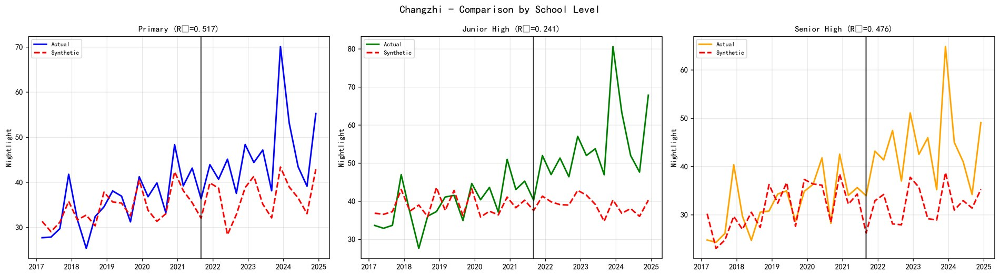
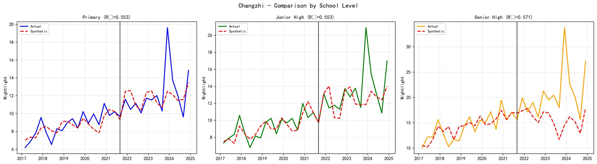
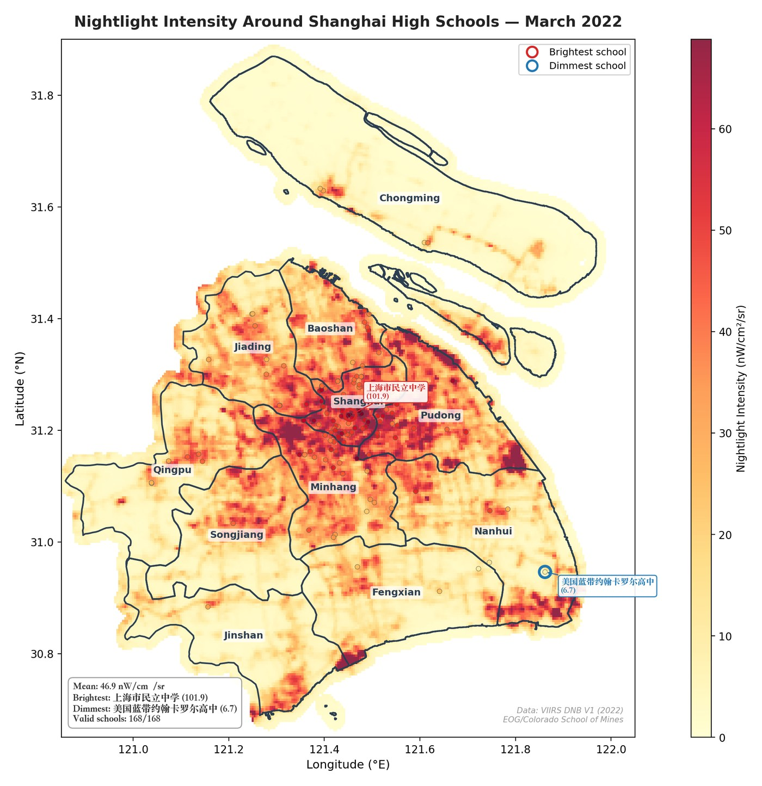
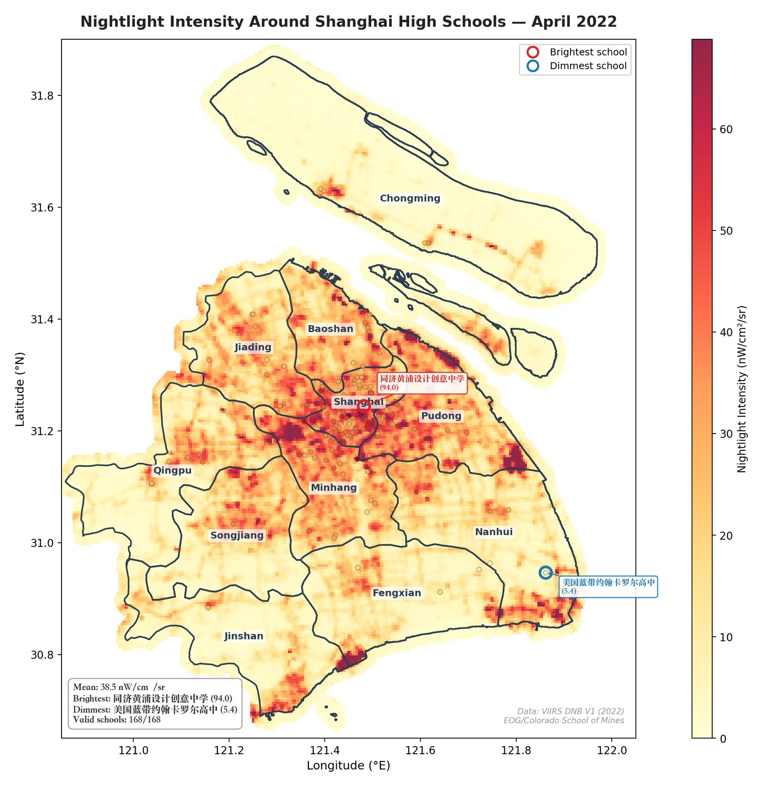
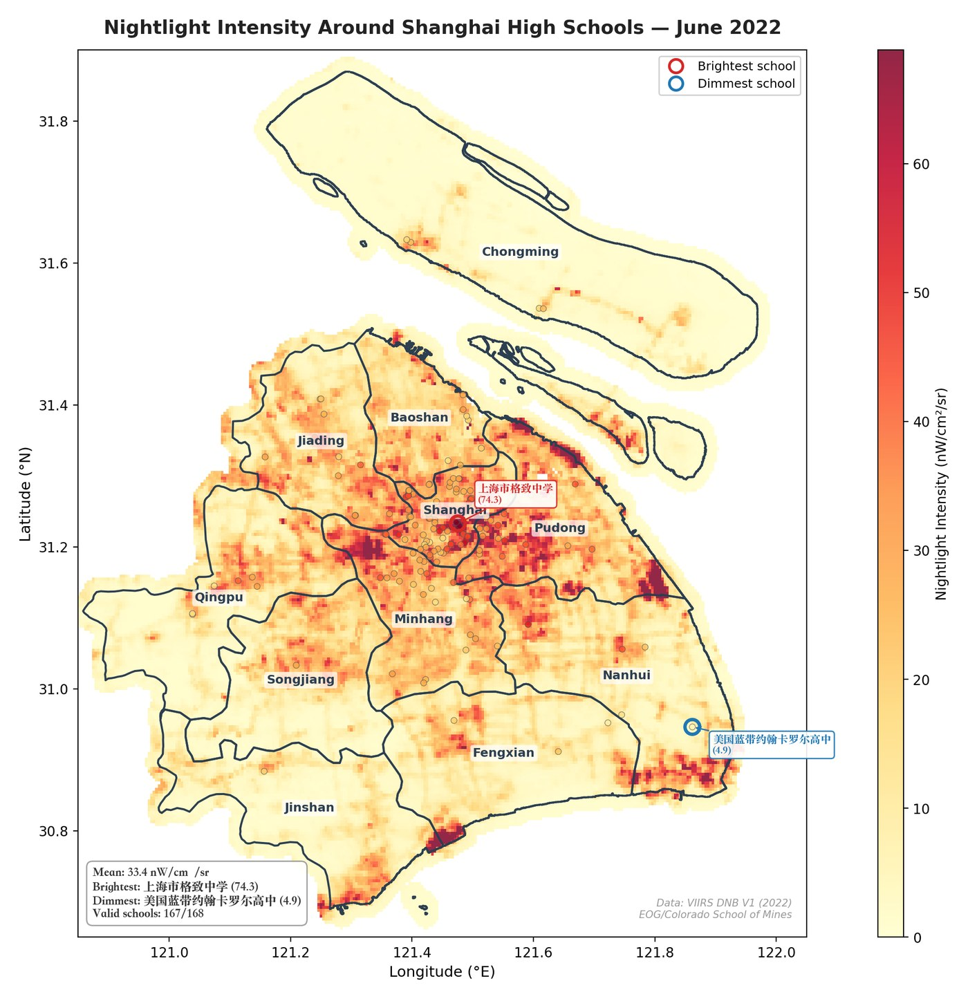

Overview
This project asks whether China’s Double Reduction policy actually reduced student study burden, or whether unchanged exam pressure and stakeholder incentives shifted study activity across places.
The original empirical move was to avoid the weaknesses of surveys by using VIIRS nighttime light intensity around schools and nearby residential communities as an objective behavioral proxy. If students stayed later at school, school-area lights might rise. If learning moved home, residential-community lights might rise. If burden genuinely fell, both should decline.
The starting point was less technical: looking out late at night during high school, seeing lights across the city, and wondering how many students were still awake behind them.
Research Path
The value of this project is not only the result, but the path by which the result became more cautious. The research moved from a promising proxy, to causal identification problems, to a stricter placebo standard, and finally to a GIS test of the proxy’s own validity.
Data Collection and Processing
The project combines manually cleaned location data, satellite radiance data, city economic covariates, and school-level classification. The key challenge was not only collecting observations, but deciding which observations could plausibly represent educational activity.
Schools
School locations were retrieved through Baidu Maps API with broad school-related keywords, then cleaned to remove non-school places, duplicate entries, relocated or closed schools, vocational schools, party schools, international schools, special education schools, and schools in ethnic autonomous regions.
Final school groups included 7,687 treated primary-school records, 3,411 treated junior-high records, and 628 treated senior-high records. Multi-campus schools were treated as separate observation units.
Communities
Residential communities were screened from property-management data. The sample targeted communities likely to contain students: within 800 meters of primary or junior high schools, within 300 meters of senior high schools, or inside recognized education-resource districts.
Communities built after 2012, dormitories, industrial parks, high-end villas, boutique apartments, and records without GPS information were excluded.
Nighttime Light
The outcome uses VIIRS DNB monthly composite data in the VCMCFG configuration, especially avg_rade9h, the average radiance after 9 PM. Pixels with cloud-free observation counts of 2 or less were dropped.
The 2022 Suomi-NPP anomaly is noted: July and August 2022 had missing SNPP observations, and August 2022 used NOAA-20/J01 substitute data.
City Covariates
Matching features included pre-treatment nighttime light trajectories and economic covariates: GDP, secondary-industry share, and tertiary-industry share. These covariates proxy city-level development and nighttime activity context, not individual family characteristics.
Method
The final analysis uses a synthetic control design at the city-quarter level. Monthly observations are aggregated to quarters to reduce noise and align with economic data. For each treated city, a synthetic city is built from non-pilot donors by matching pre-policy nighttime light trajectories and covariates.
| Component | Implementation | Reason |
|---|---|---|
| Outcome | Mean nighttime light around schools or selected communities, aggregated to city-quarter level. | Creates comparable treatment paths while reducing pixel-level noise. |
| Feature Vector | Four pre-treatment light points, pre-treatment mean light, GDP, secondary industry share, tertiary industry share. | Matches both trajectory and urban-economic context. |
| Optimization | Nested SCM: V-matrix for feature importance and W-matrix for donor-city weights, with standardized features. | Lets the data choose donor cities instead of assuming a fixed comparable control group. |
| Inference | Standard in-space placebo is primary; bootstrap placebo is secondary. | In-space placebo asks whether the treated city changed more than placebo control cities. |
The revision that matters most: the final paper treats standard in-space placebo p-values as the main significance criterion. Bootstrap significance alone is not enough, because it can show that a city changed after July 2021 without proving the change was unique to policy treatment.
SCM Results
The central finding is methodological and substantive: post-policy changes are visible, but broad causal attribution fails. COVID-19 and city-specific shocks created changes in both treated and control cities during 2021-2022, which undermines the ability to isolate the Double Reduction policy.
School Overall
No pilot city simultaneously passes the standard in-space placebo test and the backup test at the overall school level. Several cities show significant bootstrap changes, but those changes are not uniquely distinguishable from donor-city variation.
Changzhi Communities
Changzhi is the strongest case: community overall ATT is +14.087, in-space placebo p < 0.001, bootstrap p < 0.001, and R² is 0.362. But concurrent school construction and education infrastructure investment make interpretation cautious.
Shanghai Fit
Shanghai is difficult to synthesize: school overall R² is -3.061 and community overall R² is -1.255. This signals that major cities with distinctive economic and spatial structures are hard to match with available donor cities.
Level Pattern
In Changzhi community data, junior high shows the largest positive ATT: primary +9.184, junior high +15.116, senior high +11.529. This pattern is directionally consistent with the public choice prediction, but not causally conclusive.
| Venue | Most defensible result | Interpretation |
|---|---|---|
| Schools | Changzhi junior and senior high, plus Weihai junior high, are the limited level-specific cases passing both tests. | Suggestive, but too narrow for a general policy conclusion. |
| Communities | Changzhi passes both tests overall and across levels. | Potential behavioral substitution, but infrastructure investment may be the actual light source. |
| Across Cities | Effects are heterogeneous in direction and magnitude. | Consistent with mixed implementation and local shocks, not with a clean uniform treatment effect. |



Testing the Proxy Itself
After the paper, I built a Shanghai 2022 GIS exercise to ask whether nighttime light can really capture school attendance or study activity. The test used 168 Shanghai high schools, monthly VIIRS data, and interactive maps for school-level comparison.
The result weakens the proxy. During the April-May 2022 Shanghai lockdown, when schools were closed and city life was severely restricted, high-school nighttime light did not fall as sharply as the hypothesis would predict. January averaged about 48.3 nW/cm²/sr, March 46.9, April 38.5, May 38.2, and August 32.3. The pattern looks more seasonal and spatial than behavioral.





This changes the methodological conclusion. At 463-meter resolution, school study activity may be drowned out by street lighting, building facade lights, safety lighting, hospitals, logistics facilities, residential lights, and emergency infrastructure. The same schools and districts remain bright across months, which suggests that VIIRS may capture urban location more than student behavior.
A better design would need higher-frequency data, finer spatial resolution, and triangulation with other indicators such as electricity use, traffic around schools, time-use surveys, or administrative records.
Artifacts and Website Structure
This page is part of a static personal website. The root page links to project folders, and each project folder has its own index.html. On GitHub Pages, a link such as projects/pcs-nightlight/ automatically opens projects/pcs-nightlight/index.html.
Preference Mismatch and Policy Implementation, final version.
Interactive monthly map for 2022 Shanghai high-school nightlight intensity.
Interactive comparison of selected schools across months.
Community_Level.ipynb, Community_Overall.ipynb, School_Level.ipynb, and School_Overall.ipynb.